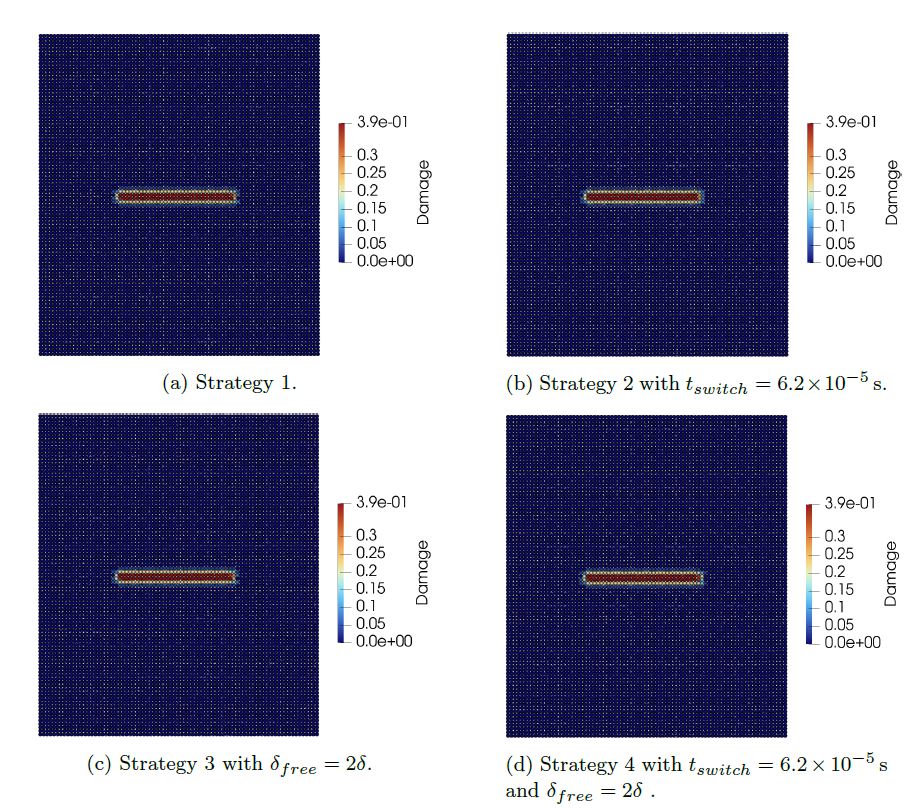
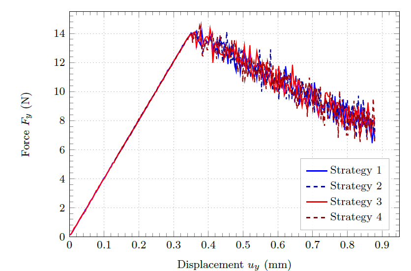

Verification
Matrix based solver Strategies
The following strategies are provided in [11].
Strategy 1: Verlet — Pointwise Summation
Full-domain Velocity-Verlet integration with pointwise bond-force summation throughout. Reference solution.
Strategy 2: Static + Pointwise Verlet
Linear static solver assembles K once and solves Ku = F_ext incrementally during load introduction. At each increment, bond damage indicators are checked; the load factor λ* at first failure is determined by linearity and scaled by S < 1. The static solution initialises the Verlet phase (u₀ = λ* u_static). Dynamic phase uses pointwise summation — no Matrix Update needed on bond breakage.
Strategy 3: Guyan-Condensed Verlet
Guyan condensation applied from the start. Domain partitioned into slave nodes (condensed), matrix master nodes Ωc, and PD nodes Ωp. Condensed dynamic system integrated with Velocity-Verlet throughout.
Strategy 4: Static + Guyan-Condensed Verlet
Combines Strategy 2 (static load introduction) with Strategy 3 (condensed dynamic phase). After the static phase, slave DOFs are eliminated and the condensed system is integrated with Velocity-Verlet. Efficient load introduction + reduced active DOFs during crack propagation.
Solutions
The crack path is given here and practically identical.

The force displacement curve is given here. It shows that all variants are in good agreement.
